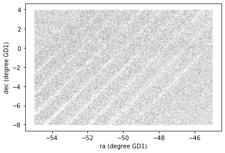
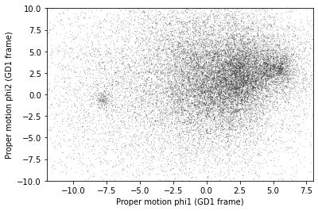
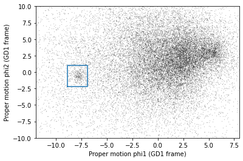
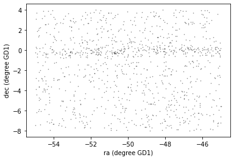
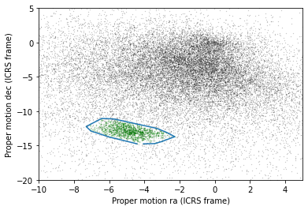
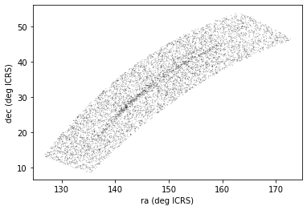
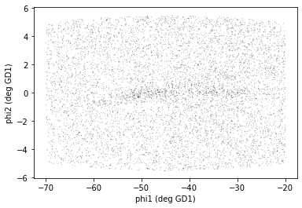

filename = 'gd1_results.fits'
from astropy.table import Table
results = Table.read(filename)
from pyia import GaiaData
gaia_data = GaiaData(results)
type(gaia_data)
pyia.data.GaiaData
import astropy.units as u
skycoord = gaia_data.get_skycoord(
distance=8*u.kpc,
radial_velocity=0*u.km/u.s)
import gala.coordinates as gc
transformed = skycoord.transform_to(gc.GD1Koposov10)
type(transformed)
astropy.coordinates.sky_coordinate.SkyCoord
gd1_coord = gc.reflex_correct(transformed)
type(gd1_coord)
astropy.coordinates.sky_coordinate.SkyCoord
phi1 = gd1_coord.phi1
phi2 = gd1_coord.phi2
import matplotlib.pyplot as plt
plt.plot(phi1, phi2, 'ko', markersize=0.1, alpha=0.2)
plt.xlabel('ra (degree GD1)')
plt.ylabel('dec (degree GD1)');

import pandas as pd
df = results.to_pandas()
df.shape
(140340, 8)
df['phi1'] = gd1_coord.phi1
df['phi2'] = gd1_coord.phi2
df.shape
(140340, 10)
df['pm_phi1'] = gd1_coord.pm_phi1_cosphi2
df['pm_phi2'] = gd1_coord.pm_phi2
df.shape
(140340, 12)
phi2_min = -1.0 * u.deg
phi2_max = 1.0 * u.deg
phi_mask = ((df['phi2'] > phi2_min) &
(df['phi2'] < phi2_max))
phi_mask.sum()
25084
centerline = df[phi_mask]
pm1 = centerline['pm_phi1']
pm2 = centerline['pm_phi2']
plt.plot(pm1, pm2, 'ko', markersize=0.3, alpha=0.3)
plt.xlabel('Proper motion phi1 (GD1 frame)')
plt.ylabel('Proper motion phi2 (GD1 frame)')
plt.xlim(-12, 8)
plt.ylim(-10, 10);

pm1_min = -8.9
pm1_max = -6.9
pm2_min = -2.2
pm2_max = 1.0
pm1_rect = [pm1_min, pm1_min, pm1_max, pm1_max, pm1_min] * u.mas/u.yr
pm2_rect = [pm2_min, pm2_max, pm2_max, pm2_min, pm2_min] * u.mas/u.yr
plt.plot(pm1, pm2, 'ko', markersize=0.3, alpha=0.3)
plt.plot(pm1_rect, pm2_rect, '-')
plt.xlabel('Proper motion phi1 (GD1 frame)')
plt.ylabel('Proper motion phi2 (GD1 frame)')
plt.xlim(-12, 8)
plt.ylim(-10, 10);

def between(series, low, high):
"""Make a Boolean Series.
series: Pandas Series
low: lower bound
high: upper bound
returns: Boolean Series
"""
return (series > low) & (series < high)
pm_mask = (between(df['pm_phi1'], pm1_min, pm1_max) &
between(df['pm_phi2'], pm2_min, pm2_max))
pm_mask.sum()
1049
selected = df[pm_mask]
phi1 = selected['phi1']
phi2 = selected['phi2']
plt.plot(phi1, phi2, 'ko', markersize=0.5, alpha=0.5)
plt.xlabel('ra (degree GD1)')
plt.ylabel('dec (degree GD1)');

filename = 'gd1_dataframe.hdf5'
df.to_hdf(filename, 'df')
centerline.to_hdf(filename, 'centerline')
selected.to_hdf(filename, 'selected')
!ls -lh gd1_dataframe.hdf5
-rw-rw-r-- 1 downey downey 17M Nov 18 19:06 gd1_dataframe.hdf5
!rm gd1_dataframe.hdf5
!wget https://github.com/AllenDowney/AstronomicalData/raw/main/data/gd1_dataframe.hdf5
--2020-11-18 19:31:21-- https://github.com/AllenDowney/AstronomicalData/raw/main/data/gd1_dataframe.hdf5
Resolving github.com... 140.82.114.3
Connecting to github.com|140.82.114.3|:443... connected.
HTTP request sent, awaiting response... 302 Found
Location: https://raw.githubusercontent.com/AllenDowney/AstronomicalData/main/data/gd1_dataframe.hdf5 [following]
--2020-11-18 19:31:21-- https://raw.githubusercontent.com/AllenDowney/AstronomicalData/main/data/gd1_dataframe.hdf5
Resolving raw.githubusercontent.com... 151.101.116.133
Connecting to raw.githubusercontent.com|151.101.116.133|:443... connected.
HTTP request sent, awaiting response... 200 OK
Length: 17335888 (17M) [application/octet-stream]
Saving to: ‘gd1_dataframe.hdf5’
gd1_dataframe.hdf5 100%[===================>] 16.53M 8.77MB/s in 1.9s
2020-11-18 19:31:24 (8.77 MB/s) - ‘gd1_dataframe.hdf5’ saved [17335888/17335888]
import pandas as pd
filename = 'gd1_dataframe.hdf5'
df = pd.read_hdf(filename, 'df')
centerline = pd.read_hdf(filename, 'centerline')
selected = pd.read_hdf(filename, 'selected')
df.shape
(140340, 12)
centerline.shape
(25084, 12)
selected.shape
(1049, 12)
import numpy as np
points = selected[['pmra', 'pmdec']].to_numpy()
points
array([[ -3.65859609, -12.48641977],
[ -3.57235105, -13.19584836],
[ -4.52678061, -12.74505387],
...,
[ -3.7313674 , -13.06684162],
[ -3.63378135, -12.93358913],
[ -3.44742277, -13.22808211]])
points.shape
(1049, 2)
from scipy.spatial import ConvexHull
hull = ConvexHull(points)
hull
<scipy.spatial.qhull.ConvexHull at 0x7fac07b1b8e0>
hull.vertices
array([ 692, 873, 141, 303, 42, 622, 45, 83, 127, 182, 1006,
971, 967, 1001, 969, 940], dtype=int32)
pm_vertices = points[hull.vertices]
type(pm_vertices)
numpy.ndarray
pm_vertices.shape
(16, 2)
pm_vertices
array([[ -4.05037121, -14.75623261],
[ -3.41981085, -14.72365546],
[ -3.03521988, -14.44357135],
[ -2.26847919, -13.7140236 ],
[ -2.61172203, -13.24797471],
[ -2.73471401, -13.09054471],
[ -3.19923146, -12.5942653 ],
[ -3.34082546, -12.47611926],
[ -5.67489413, -11.16083338],
[ -5.95159272, -11.10547884],
[ -6.42394023, -11.05981295],
[ -7.09631023, -11.95187806],
[ -7.30641519, -12.24559977],
[ -7.04016696, -12.88580702],
[ -6.00347705, -13.75912098],
[ -4.42442296, -14.74641176]])
xs, ys = np.transpose(pm_vertices)
xs
array([-4.05037121, -3.41981085, -3.03521988, -2.26847919, -2.61172203,
-2.73471401, -3.19923146, -3.34082546, -5.67489413, -5.95159272,
-6.42394023, -7.09631023, -7.30641519, -7.04016696, -6.00347705,
-4.42442296])
ys
array([-14.75623261, -14.72365546, -14.44357135, -13.7140236 ,
-13.24797471, -13.09054471, -12.5942653 , -12.47611926,
-11.16083338, -11.10547884, -11.05981295, -11.95187806,
-12.24559977, -12.88580702, -13.75912098, -14.74641176])
pm1 = centerline['pmra']
pm2 = centerline['pmdec']
plt.plot(pm1, pm2, 'ko', markersize=0.3, alpha=0.3)
pm1 = selected['pmra']
pm2 = selected['pmdec']
plt.plot(pm1, pm2, 'gx', markersize=1, alpha=0.3)
plt.plot(xs, ys)
plt.xlabel('Proper motion ra (ICRS frame)')
plt.ylabel('Proper motion dec (ICRS frame)')
plt.xlim([-10, 5])
plt.ylim([-20, 5]);

pm_vertices
array([[ -4.05037121, -14.75623261],
[ -3.41981085, -14.72365546],
[ -3.03521988, -14.44357135],
[ -2.26847919, -13.7140236 ],
[ -2.61172203, -13.24797471],
[ -2.73471401, -13.09054471],
[ -3.19923146, -12.5942653 ],
[ -3.34082546, -12.47611926],
[ -5.67489413, -11.16083338],
[ -5.95159272, -11.10547884],
[ -6.42394023, -11.05981295],
[ -7.09631023, -11.95187806],
[ -7.30641519, -12.24559977],
[ -7.04016696, -12.88580702],
[ -6.00347705, -13.75912098],
[ -4.42442296, -14.74641176]])
t = [str(x) for x in pm_vertices.flatten()]
len(t)
32
pm_point_list = ', '.join(t)
pm_point_list
'-4.050371212154984, -14.75623260987968, -3.4198108491382455, -14.723655456335619, -3.035219883740934, -14.443571352854612, -2.268479190206636, -13.714023598831554, -2.611722027231764, -13.247974712069263, -2.7347140078529106, -13.090544709622938, -3.199231461993783, -12.594265302440828, -3.34082545787549, -12.476119260818695, -5.674894125178565, -11.160833381392624, -5.95159272432137, -11.105478836426514, -6.423940229776128, -11.05981294804957, -7.096310230579248, -11.951878058650085, -7.306415190921692, -12.245599765990594, -7.040166963232815, -12.885807024935527, -6.0034770546523735, -13.759120984106968, -4.42442296194263, -14.7464117578883'
phi1_min = -70
phi1_max = -20
phi2_min = -5
phi2_max = 5
import astropy.units as u
phi1_rect = [phi1_min, phi1_min, phi1_max, phi1_max] * u.deg
phi2_rect = [phi2_min, phi2_max, phi2_max, phi2_min] * u.deg
import gala.coordinates as gc
import astropy.coordinates as coord
corners = gc.GD1Koposov10(phi1=phi1_rect, phi2=phi2_rect)
corners_icrs = corners.transform_to(coord.ICRS)
point_base = "{point.ra.value}, {point.dec.value}"
t = [point_base.format(point=point)
for point in corners_icrs]
point_list = ', '.join(t)
point_list
'135.30559858565638, 8.398623940157561, 126.50951508623503, 13.44494195652069, 163.0173655836748, 54.24242734020255, 172.9328536286811, 46.47260492416258'
query_base = """SELECT
{columns}
FROM gaiadr2.gaia_source
WHERE parallax < 1
AND bp_rp BETWEEN -0.75 AND 2
AND 1 = CONTAINS(POINT(ra, dec),
POLYGON({point_list}))
"""
columns = 'source_id, ra, dec, pmra, pmdec, parallax, parallax_error, radial_velocity'
Exercise 1: Use format to format query_base and define query, filling in the values of columns and point_list.
query = query_base.format(columns=columns, point_list=point_list)
print(query)
SELECT
source_id, ra, dec, pmra, pmdec, parallax, parallax_error, radial_velocity
FROM gaiadr2.gaia_source
WHERE parallax < 1
AND bp_rp BETWEEN -0.75 AND 2
AND 1 = CONTAINS(POINT(ra, dec),
POLYGON(135.30559858565638, 8.398623940157561, 126.50951508623503, 13.44494195652069, 163.0173655836748, 54.24242734020255, 172.9328536286811, 46.47260492416258))
Exercise 2: Modify query_base by adding a new clause to select stars whose coordinates of proper motion, pmra and pmdec, fall within the polygon defined by pm_point_list.
query_base = """SELECT
{columns}
FROM gaiadr2.gaia_source
WHERE parallax < 1
AND bp_rp BETWEEN -0.75 AND 2
AND 1 = CONTAINS(POINT(ra, dec),
POLYGON({point_list}))
AND 1 = CONTAINS(POINT(pmra, pmdec),
POLYGON({pm_point_list}))
"""
query = query_base.format(columns=columns,
point_list=point_list,
pm_point_list=pm_point_list)
print(query)
SELECT
source_id, ra, dec, pmra, pmdec, parallax, parallax_error, radial_velocity
FROM gaiadr2.gaia_source
WHERE parallax < 1
AND bp_rp BETWEEN -0.75 AND 2
AND 1 = CONTAINS(POINT(ra, dec),
POLYGON(135.30559858565638, 8.398623940157561, 126.50951508623503, 13.44494195652069, 163.0173655836748, 54.24242734020255, 172.9328536286811, 46.47260492416258))
AND 1 = CONTAINS(POINT(pmra, pmdec),
POLYGON(-4.050371212154984, -14.75623260987968, -3.4198108491382455, -14.723655456335619, -3.035219883740934, -14.443571352854612, -2.268479190206636, -13.714023598831554, -2.611722027231764, -13.247974712069263, -2.7347140078529106, -13.090544709622938, -3.199231461993783, -12.594265302440828, -3.34082545787549, -12.476119260818695, -5.674894125178565, -11.160833381392624, -5.95159272432137, -11.105478836426514, -6.423940229776128, -11.05981294804957, -7.096310230579248, -11.951878058650085, -7.306415190921692, -12.245599765990594, -7.040166963232815, -12.885807024935527, -6.0034770546523735, -13.759120984106968, -4.42442296194263, -14.7464117578883))
from astroquery.gaia import Gaia
job = Gaia.launch_job_async(query)
print(job)
Created TAP+ (v1.2.1) - Connection:
Host: gea.esac.esa.int
Use HTTPS: True
Port: 443
SSL Port: 443
Created TAP+ (v1.2.1) - Connection:
Host: geadata.esac.esa.int
Use HTTPS: True
Port: 443
SSL Port: 443
INFO: Query finished. [astroquery.utils.tap.core]
<Table length=7346>
name dtype unit description n_bad
--------------- ------- -------- ------------------------------------------------------------------ -----
source_id int64 Unique source identifier (unique within a particular Data Release) 0
ra float64 deg Right ascension 0
dec float64 deg Declination 0
pmra float64 mas / yr Proper motion in right ascension direction 0
pmdec float64 mas / yr Proper motion in declination direction 0
parallax float64 mas Parallax 0
parallax_error float64 mas Standard error of parallax 0
radial_velocity float64 km / s Radial velocity 7295
Jobid: 1605731697505O
Phase: COMPLETED
Owner: None
Output file: async_20201118153457.vot
Results: None
candidate_table = job.get_results()
type(candidate_table)
astropy.table.table.Table
x = candidate_table['ra']
y = candidate_table['dec']
plt.plot(x, y, 'ko', markersize=0.3, alpha=0.3)
plt.xlabel('ra (deg ICRS)')
plt.ylabel('dec (deg ICRS)');

from pyia import GaiaData
def make_dataframe(table):
"""Transform coordinates from ICRS to GD-1 frame.
table: Astropy Table
returns: Pandas DataFrame
"""
gaia_data = GaiaData(table)
c_sky = gaia_data.get_skycoord(distance=8*u.kpc,
radial_velocity=0*u.km/u.s)
c_gd1 = gc.reflex_correct(
c_sky.transform_to(gc.GD1Koposov10))
df = table.to_pandas()
df['phi1'] = c_gd1.phi1
df['phi2'] = c_gd1.phi2
df['pm_phi1'] = c_gd1.pm_phi1_cosphi2
df['pm_phi2'] = c_gd1.pm_phi2
return df
candidate_df = make_dataframe(candidate_table)
candidate_df.shape
(7346, 12)
x = candidate_df['phi1']
y = candidate_df['phi2']
plt.plot(x, y, 'ko', markersize=0.3, alpha=0.3)
plt.xlabel('phi1 (deg GD1)')
plt.ylabel('phi2 (deg GD1)');

Exercise Write candidate_df to an HDF file named gd1_candidates.
Save it as a dataset named candidate_df.
candidate_df.to_hdf('gd1_candidates.hdf', 'candidate_df')
!ls -lh gd1_candidates.hdf
-rw-rw-r-- 1 downey downey 756K Nov 18 15:54 gd1_candidates.hdf
candidate_df.to_csv('gd1_candidates.csv')
!ls -lh gd1_candidates.csv
-rw-rw-r-- 1 downey downey 1.6M Nov 18 15:51 gd1_candidates.csv
!head gd1_candidates.csv
,source_id,ra,dec,pmra,pmdec,parallax,parallax_error,radial_velocity,phi1,phi2,pm_phi1,pm_phi2
0,635559124339440000,137.58671691646745,19.1965441084838,-3.770521900009566,-12.490481778113859,0.7913934419894347,0.2717538145759051,,-59.63048941944396,-1.21648525150429,-7.3613627125974945,-0.5926328820644919
1,635860218726658176,138.5187065217173,19.09233926905897,-5.941679495793577,-11.346409129876392,0.30745551377348623,0.19946557779138105,,-59.247329893833296,-2.0160784008206476,-7.52712608464053,1.7487794924176672
2,635674126383965568,138.8428741026386,19.031798198627634,-3.8970011609340207,-12.702779525389634,0.7794631695848825,0.22369151932421705,,-59.13339098769217,-2.3069007451798287,-7.560607655557421,-0.7417999555980245
3,635535454774983040,137.8377518255436,18.864006786112604,-4.335040664412791,-14.492308604905652,0.31451429349160354,0.10277456217796248,,-59.78529963350303,-1.5945692849622026,-9.35753561702402,-1.2184922339592716
4,635497276810313600,138.0445160213759,19.00947118796605,-7.1729306406216615,-12.291499169815987,0.42540354480291037,0.3376892347379532,,-59.55774434692722,-1.6821467937242753,-9.000831056712947,2.3344066165829673
5,635614168640132864,139.59219748145836,18.807955539071433,-3.309602916796381,-13.708904908478631,0.5833821573394844,0.5746175895352217,,-58.938113464510934,-3.0241923218278397,-8.062761531706451,-1.8690819375362338
6,635821843194387840,139.88094034815086,19.62185456718988,-6.544201177153814,-12.55978220563274,0.3788707393484704,0.2134264091820104,,-58.10569437830526,-2.8105428528649257,-8.814581159026405,1.451032881430119
7,635551706931167104,138.04665586038192,19.248909662830798,-6.224595114220405,-12.224246333795001,0.7832805254544403,0.12699359319614956,,-59.354285349557074,-1.5557649698784075,-8.427716582116249,1.5738026079151446
8,635518889086133376,137.2374229207837,18.7428630711791,-3.3186800714801046,-12.710314902969365,0.17932476739336733,0.7503378631682915,,-60.19048364007102,-1.1779749872253444,-7.3401827273605385,-1.064062501817137